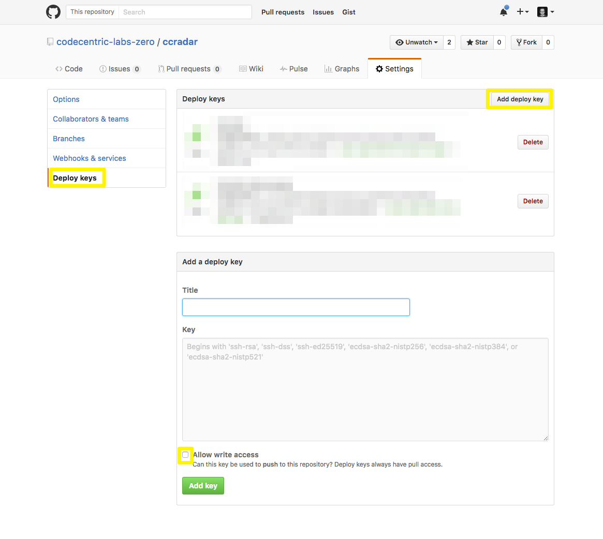

Continuous delivery
Unfortunately, there are still a lot of manual steps in configuring the continuous delivery pipeline for a mobile application written in react-native. We actively search for better ways of doing this, but in the meantime, you'll need to do the following (please be aware that this guide assumes that you bootstrapped the application as described above):
iOS project files
In order to be able to actually delivery the application via BuddyBuild and iTunes Connect, you will need to modify a few native resources.
1. Product name
In Xcode, inside the project's Build Settings, choose a Product Bundle Identifiers, and a
Product Name.
2. Code signing
Set up Code Signing Identity to iOS Developer for automated code signing in
BuddyBuild.

3. App icons (optional)
Depending on the target platform, modify default application icons in Images.xcassets.
4. Launch screen
React-native comes with a standard launch screen but you might want to modify it. In Xcode, change LaunchScreen.xib
to fit your needs.

Android project files
In order to be able to actually delivery the application via BuddyBuild and Google Play, you will need to modify a few native resources.
1. App icons (optional)
If you want to override the default icons, you will need to copy app icons for all resolutions to the directories in android/app/src/main/res. Be careful
only to override the image ressources. If you are looking for a fast and easy way to create all necessary icons, you can use
an online app icon creator.
2. Building an APK
Before BuddyBuild can deploy your application to Google Play, you will need to upload an APK manually once. You can create this
initial APK by following the instructions given in the react-native documentation.
After you have created the APK, be sure to revert the changes you made to your Android project files. BuddyBuild does all the code signing
for you.
Apple Developer
Next, we'll set up the app in our Apple Developer account.
1. Create App ID
In your Apple Developer account, navigate to Certificates, IDs & Profiles -> Identifiers -> App IDs and create a new App identifier.
Be sure to use the Bundle ID you set up for the app when configuring the iOS project files.
iTunes Connect
We also need to set up the application for delivery via iTunes Connect.
1. Create new application
In iTunes Connect, navigate to My Apps
and click the + button. Follow the instruction to create a new application.

2. Grant permissions
In iTunes Connect, navigate to Users & Roles.
Assign the newly created app to the codecentric labs zero user by adding it to the list of applications on the Roles tab.
Google Play
For the Android version, we will need to set up a new application in Google Play.
1. Create new application
In the Google Play Developer Console, create a new app by clicking
the button.
2. Configure the application
Configuring a new application on Google Play is a little bit more involved than the iOS equivalent. Fortunately, you
can check what's missing by using the why can't I publish anything link on the upper right corner. For your
convenience, we included default media for this step in the project's default-assets folder.
3. Upload APK
Once you have finished all other configuration steps, you can upload your APK to the tracks you want BuddyBuild to publish in.
CircleCI
CircleCI will be used to automatically merge into master and tag a release whenever changes are pushed
to develop and all tests are green. We will later set up BuddyBuild to publish the application from
master to enable continuous delivery.
1. Add project
In the CircleCI dashboard, add the app's GitHub repository as a new project.
A circle.yml and a merge script are created during bootstrap, so no additional build configuration is required.
2. Grant write access
By default, only read access is granted to CircleCI. To enable write access, you will need to create an additional SSH and add
it to CircleCI and GitHub. Follow these instructions.

BuddyBuild
The final step is configuring BuddyBuild to build, sign and deploy new version of the application whenever a commit on the
master branch is detected.
1. Add projects
BuddyBuild can automatically detect and configure react-native builds. All you need to do is add the GitHub repository of the application and
choose which application should be added. Make sure that BuddyBuild is working on the master branch when doing this.
2. Configure projects
First, disable all branches but master by unchecking everything in the branch settings dialogue. Configure master to only
build on pushes. Also, make sure that only the Release version is being built.
3. Code signing
Go to each project's settings and follow the instructions given on the application signing pages. For iOS, this will include exporting and
uploading your certificates. For Android, you will need to create and upload a keystore.
4. Configure deployments
Go to each project's deployment tab and set up delivery via BuddyBuild for each build of the master branch, adding members to the test groups as needed. Configure
deployments via Testflight and Google Play Alpha or Beta channels to happen once a day from the master branch. Please note that you will need
Unit Testing
After the latest changes to Jest, we recently switched back to using the default React Native test setup. You can have a look at the test directory in our template to see the details.
Libraries
We use the following libraries for writing and running unit tests:
- Jest as test-runner, for test doubles and for assertions
- redux-mock-store for testing actions
- Enzyme and react-test-renderer for testing components and containers
Running the tests
You can run the tests from the command line by executing npm test. For WebStorm, there is no dedicated Jest test runner
yet, but you can create a test run configuration by following these instructions.
As CircleCI is automatically running npm test, no additional setup is needed for continuous integration.
Functional Testing
We use appium for functional testing. To run our appium tests as part of our continuous delivery pipeline, we use Bitbar Testing (Testdroid) and a custom build step on BuddyBuild. The following sections describe our approach.
Install appium
Follow the instructions to install appium for your platform.
Preparing the App
We write our actual tests with WD.js, which you will need to install via rpm install --save-dev wd.
In order to execute the tests locally and on BuddyBuild, we use a npm script:
"functional-tests": "jest --config=jest-functional-tests.json"
Have a look at a sample configuration file for
the details.
We will also need to exclude our specs from the normal test runs by adding
"testPathIgnorePatterns": [
"<rootDir>/specs/",
"<rootDir>/node_modules/"
]
to the Jest configuration block.
Preparing Bitbar
In your Bitbar project overview, you need to create a new project. Make sure to choose the right type
(either "Appium Android" or "Appium iOS") from the drop down. You will need to use the exact project name when setting up your WD test later on.
Also, find the device you want to use and note it's name.
Preparing BuddyBuild
In order to have BuddyBuild run the appium tests on Testdroid, we need to set up some environment variables. TESTDROID needs to be set
to 1. Also, you will need to set TESTDROID_API to the API key found on your Testdroid
account page.
At this point, we will also add the custom build script
to our project. Please note that the script needs to be inside the native project folder.
The example given here is for an Android project. For iOS projects, you can use $BUDDYBUILD_IPA_PATH directly. The build script will upload the latest
version of the app to Testdroid, export its file name as environment variable and start the functional tests.

Writing the functional test
Have a look at an example to see how to set up WD.js to run both locally and on BuddyBuild. For more information on how to configure the required properties, have a look at the Testdroid documentation.
Running the tests locally
Start the appium server with appium, then run the tests with npm run functional-test.
Libraries and components
We found the following libraries helpful.
Business logic
We use the Flux architecture when building React Native applications. For implementing it, we use the following libraries:
- Redux as Flux implementation
- React Redux for React bindings
- Redux Thunk for implementing asynchronous actions
- Redux Persist for persisting state in between sessions
- Redux Async Initial State if we need to asynchronously initialize our Redux store
Hardware access
We have had good experiences with the following libraries for accessing hardware:
- react-native-camera (iOS) and react-native-barcodescanner (Android) for using the camera to scan barcodes.
- react-native-bluetooth-serial for establishing serial connections via bluetooth
- react-native-sound for playing sound files
Navigation
After struggling with react-native-redux-router's abstractions, we decided to implement our own navigation and routing stack with the NavigationExperimental primitives when we need to. We found react-native-tabs to work fine for us when implementing tabbed navigation.
Typography and Icons
We use react-native-vector-icons a lot.
Stylesheets
To work around rendering differences on Android and iOS, we usually use react-native-platform-stylesheet
Communication with backends
We use the following libraries when having the need for backend communication:
- axios for HTTP-based communication (with axios-mock-adapter for testing)
- react-native-fcm for push notifications with Firebase Cloud Messaging
Mobile monitoring with apteligent
We are using Apteligent for monitoring of mobile applications.
Steps for integrating apteligent into mobile application for android are:
- Register the application on your apteligent account
- In apps build.grade file add dependency
compile 'com.crittercism:crittercism-android-agent:+' - In AndroidManifest.xml file add the following permissions:
<uses-permission android:name="android.permission.INTERNET"/>
<uses-permission android:name="android.permission.ACCESS_NETWORK_STATE"/> -
In MainActivity.java file add imports
import com.crittercism.app.Crittercism;
import android.os.Bundle;
and override onCreate method:
@OverrideCRITTERCISM_APP_ID can be found in App settings when you access the application
protected void onCreate(Bundle bundleInstance) {
super.onCreate(bundleInstance);
Crittercism.initialize(getApplicationContext(), "CRITTERCISM_APP_ID");
}
registered in the first step